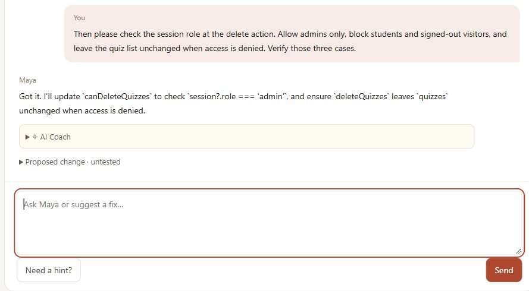

Explain before you fix
Students can ask what the code means before proposing a change.
AI-assisted software development · COMP5241
AI writes the code.
You are the engineer.
Learn to spot what is wrong, ask for a better fix,
and check that the code actually works.
The work after “done”
Generating code is only part of building software. Someone still has to understand the requirements, catch edge cases and verify a change. SkillLoop puts students in that role, with an AI developer whose work they can question.
The learning experience
Explore how diagnosis, learning, dialogue and verification fit together.
Your starting point
Choose a software case and answer short checks. AI uses your answers to identify the knowledge you need to practise.
You leave with a diagnosis and priority topics.
Open this module ↗A quick check
Compare the code with the requirement, then try an input that might break it.
Your answers guide the next learning activity.
Inside SkillLoop
Ask what the code does. Challenge a proposal. Keep refining your request while the AI carries the conversation forward.

Students can ask what the code means before proposing a change.
Follow-up replies use prior discussion and the requirements the student has raised.
The verification module runs case tests. AI helps explain the results; the test runner determines pass or fail.
Practice with familiar software
Three teaching scenarios make code review concrete.
Look beyond a plausible total. Examine quantities, discounts and empty-cart behaviour.
Check who can perform an action and what happens when access is denied.
Think through pending saves, failed requests and the work a user could lose.
Try the project
Take the engineer’s seat and find out.
Launch SkillLoop ↗skillloop-sigma.vercel.app